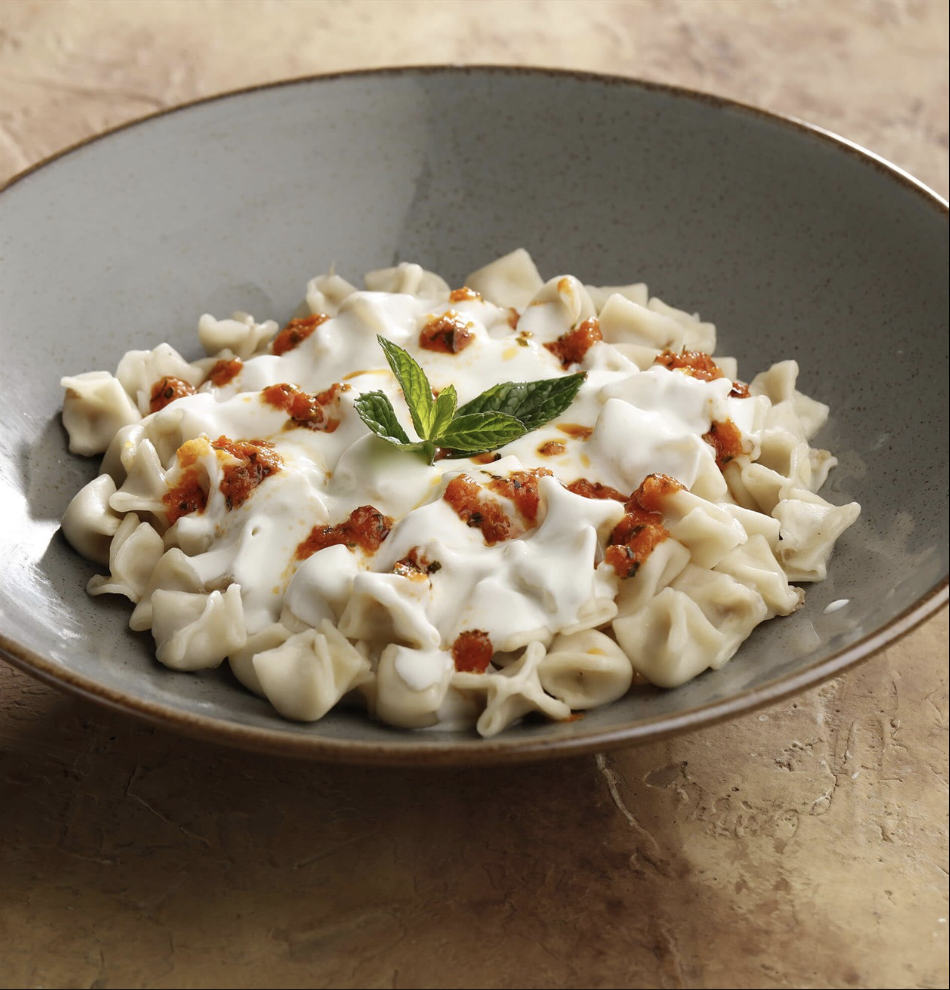

MANTI TARİFİ

Mantı Tarifi İçin Malzemeler
- 3 su bardağı un
- 1 su bardağı ılık su
- Tuz
- 1 adet yumurta
harcı için:
- 250 g az yağlı kıyma
- 1 adet orta boy soğan
- Karabiber
- Pul biber
- Tuz
pişirmek için:
- Tereyağı
- 2 yemek kaşığı salça
üzeri için:
- Sarımsaklı Yoğurt
- Nane
- Sumak
- Pul biber
yapılışı:
- Genişçe bir kapta unun ortasını açın, yumurtayı kırın, bir tutam tuz serpin ve azar azar su ilave ederek hamuru yoğurun.
- Hamurun ne çok kaskatı ne de çok yumuşak olmalıdır.
- Hamurdan bezeler yaparak, bunları teker teker, hazır yufkadan daha kalınca olarak açın.
- Diğer taraftan kıymanı içine kırmızıbiber, karabiber, tuz ve rendelemiş olduğunuz soğanı ekleyerek biraz yoğurun.
- Kıymadan kopardığınız küçük parçaları kare kare kesmiş olduğunuz hamurun üzerine koyun.
- Hamurların 4 köşesini bir araya getirip şekillendirin.
- Mantılar hazır olunca kaynayan suya atarak 15-20dk kadar pişirin.
- Bu arada küçük bir tavada tereyağını eriyip salçayı kavurun.
- Pişmekte olan mantının suyuna ilave edin.
- 5 dk kadar daha pişirdikten sonra ocaktan alın.
- Mantıyı tabaklara koyun üzerine sarımsaklı yoğurt dökün.
- Nane ve bol sumak serperek servis edebilirsiniz.
- Dilerseniz pulbiber de kullanabilirsiniz. Afiyet olsun.